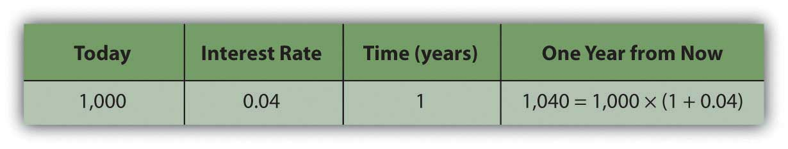
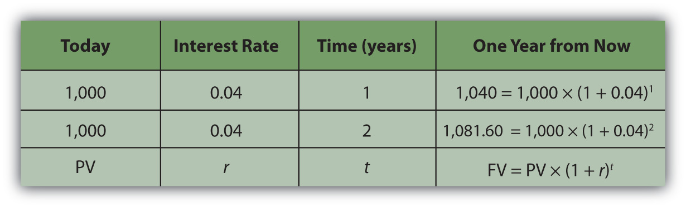
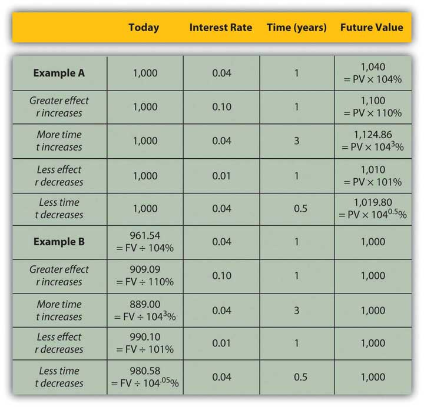

Financial calculation is not often a necessary skill since it is easier to use calculators, spreadsheets, and software. However, understanding the calculations is important in understanding the relationships between time, risk, opportunity cost, and value.
To do the math, you need to know
It is usually not difficult to forecast the timing and amounts of future cash flows. Although there may be some uncertainty about them, gauging the rate at which time affects money can require some judgment. That rate, commonly called the discount rateThe effect of time on value or the rate at which time affects value; used when calculating the equivalent present value of a nominal future value. because time discounts value, is the opportunity cost of not having liquidity. Opportunity cost derives from forgone choices or sacrificed alternatives, and sometimes it is not clear what those might have been (see Chapter 2 "Basic Ideas of Finance"). It is an important judgment call to make, though, because the rate will directly affect the valuation process.
At times, the alternatives are clear: you could be putting the liquidity in an account earning 3 percent, so that’s your opportunity cost of not having it. Or you are paying 6.5 percent on a loan, which you wouldn’t be paying if you had enough liquidity to avoid having to borrow; so that’s your opportunity cost. Sometimes, however, your opportunity cost is not so clear.
Say that today is your twentieth birthday. Your grandparents have promised to give you $1,000 for your twenty-first birthday, one year from today. If you had the money today, what would it be worth? That is, how much would $1,000 worth of liquidity one year from now be worth today?
That depends on the cost of its not being liquid today, or on the opportunity costs and risks created by not having liquidity today. If you had $1,000 today, you could buy things and enjoy them, or you could deposit it in an interest-bearing account. So on your twenty-first birthday, you would have more than $1,000. You would have the $1,000 plus whatever interest it had earned. If your bank pays 4 percent per year (interest rates are always stated as annual rates) on your account, then you would earn $40 of interest in the next year, or $1,000 × .04. So on your twenty-first birthday you would have $1,040.
Figure 4.4
If you left that amount in the bank until your twenty-second birthday, you would have
To generalize the computation, if your present valueLiquid value in the present, or the discounted value of a nominal amount of future liquidity, taking into account the effect of time on value., or PV, is your value today, r is the rate at which time affects value or discount rate (in this case, your interest rate), and if t is the number of time periods between you and your liquidity, then the future valueThe value of a present liquidity or projected series of cash flows in the future, accounting for the effects of time on value., or FV, of your wealth would be
Figure 4.5
In this case,
Assuming there is little chance that your grandparents will not be able to give this gift, there is negligible risk. Your only cost of not having liquidity now is the opportunity cost of having to delay consumption or not earning the interest you could have earned.
The cost of delayed consumption is largely derived from a subjective valuation of whatever is consumed, or its utilityValue, including subjective or nonmarket value as well as objective or market value. or satisfaction. The more value you place on having something, the more it “costs” you not to have it, and the more the time that you are without it affects its value.
Assuming that if you had the money today you would save it (as it’s much harder to quantify your joy from consumption), by having to wait to get it until your twenty-first birthday—and not having it today—you miss out on $40 it could have earned.
So, what would that nominal $1,000 (that future value that you get one year from now) actually be worth today? The rate at which time affects your value is 4 percent because that’s what having a choice (spend it or invest it) could earn for you if only you had received the $1,000. That’s your opportunity cost. That’s what it costs you to not have liquidity. Since
Your gift is worth $961.5385 today (its present value). If your grandparents offered to give you your twenty-first birthday gift on your twentieth birthday, they could give you $961.5385 today, which would be the equivalent value to you of getting $1,000 one year from now.
It is important to understand the relationships between time, risk, opportunity cost, and value. This equation describes that relationship:
The “r” is more formally called the “discount rate” because it is the rate at which your liquidity is discounted by time, and it includes not only opportunity costs but also risk. (On some financial calculators, “r” is displayed as “I” or “i.”)
The “t” is how far away you are from your liquidity over time.
Studying this equation yields valuable insights into the relationship it describes. Looking at the equation, you can observe the following relationships.
The more time (t) separating you from your liquidity, the more time affects value. The less time separating you from your liquidity, the less time affects value (as t decreases, PV increases).
| As t increases | the PV of your FV liquidity decreases |
| As t decreases | the PV of your FV liquidity increases |
The greater the rate at which time affects value (r), or the greater the opportunity cost and risk, the more time affects value. The less your opportunity cost or risk, the less your value is affected.
| As r increases | the PV of your FV liquidity decreases |
| As r decreases | the PV of your FV liquidity increases |
Figure 4.6 "Present Values, Interest Rates, Time, and Future Values" presents examples of these relationships.
Figure 4.6 Present Values, Interest Rates, Time, and Future Values
The strategy implications of this understanding are simple, yet critical. All things being equal, it is more valuable to have liquidity (get paid, or have positive cash flow) sooner rather than later and give up liquidity (pay out, or have negative cash flow) later rather than sooner.
If possible, accelerate incoming cash flows and decelerate outgoing cash flows: get paid sooner, but pay out later. Or, as Popeye’s pal Wimpy used to say, “I’ll give you 50 cents tomorrow for a hamburger today.”
To relate a present (liquid) value to a future value, you need to know
The relationship of
The above equation yields valuable insights into these relationships: